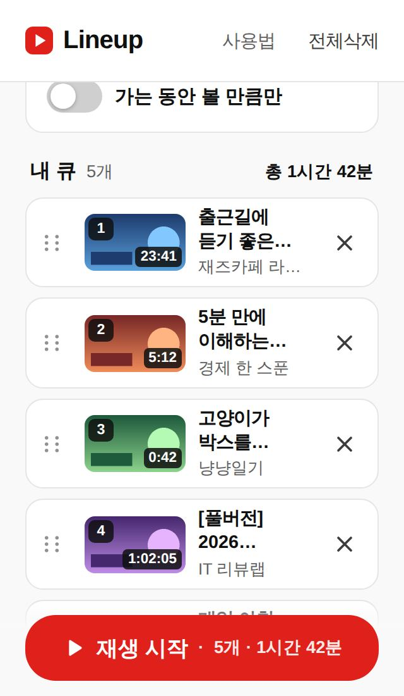
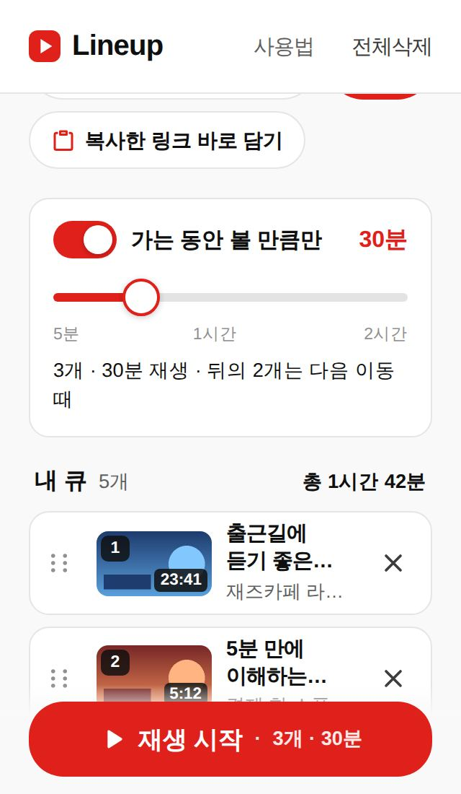
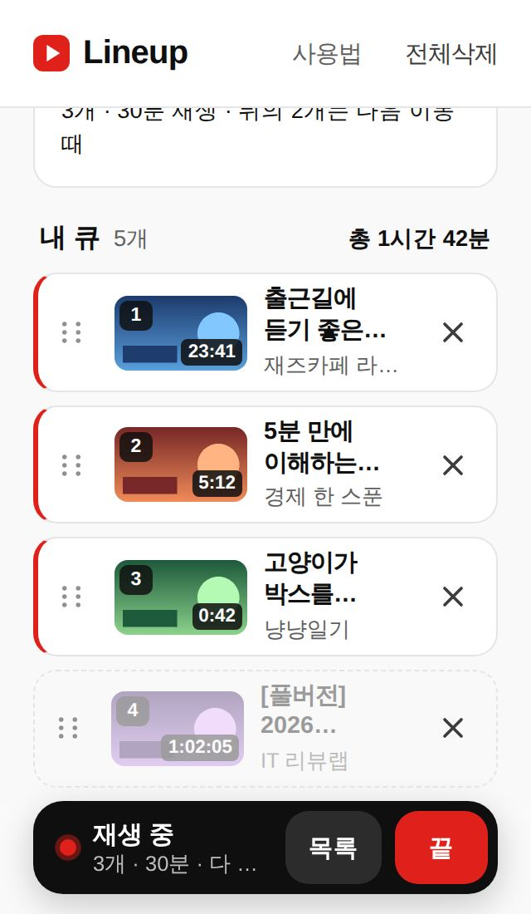
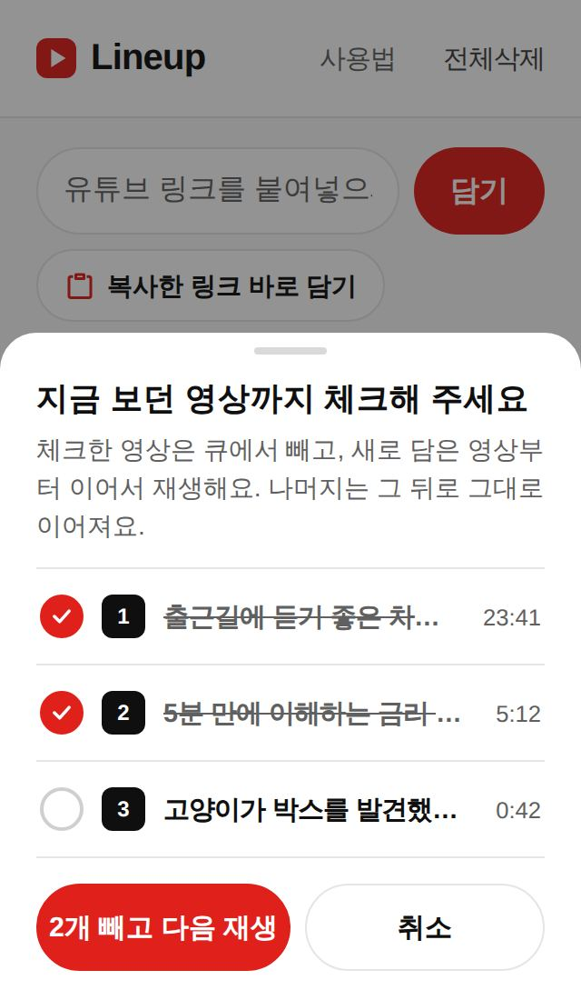

Lineup 사용법
유튜브 영상을 원하는 순서로 담아두고, 출퇴근길에 가는 동안 볼 만큼만 한 번에 이어보세요. 로그인도 설치도 필요 없어요.
▶ Lineup 바로 쓰기영상 담기
유튜브 앱에서 보고 싶은 영상의 공유 → 링크 복사를 누른 뒤, Lineup에서 아래 중 편한 방법으로 담으세요.
- 입력창에 붙여넣기 — 입력창을 길게 눌러 "붙여넣기" 하면 그 즉시 담겨요. 가장 확실한 방법이에요.
- "복사한 링크 바로 담기" 버튼 — 버튼 한 번이면 끝. 처음 한 번은 "클립보드 허용"을 물어봐요.
- 자동 제안 — 허용해 두면, 링크를 복사하고 Lineup을 열기만 해도 "방금 복사한 영상 [담기]"가 떠요.

담으면 제목·채널·길이가 자동으로 채워지고, 위에 총 재생시간이 보여요
허용 창이 "이 사이트에서는 권한을 요청할 수 없음"으로 막힐 때
화면 가장자리에 떠 있는 다른 앱의 동그란 말풍선(번역·메신저 버블 등)을 잠시 끄고 다시 눌러보세요. 안드로이드가 보안상 막는 거예요.
순서 정하기
- 각 영상 왼쪽의 ⠿ 손잡이를 누른 채로 위아래로 끌면 순서가 바뀌어요.
- 오른쪽 ✕로 빼고, 실수했다면 아래 뜨는 되돌리기를 누르세요.
- 큐는 이 휴대폰(브라우저)에 저장돼서, 앱을 껐다 켜도 그대로 남아요.
가는 동안 볼 만큼만
스위치를 켜고 이동 시간을 맞추면, 그 시간 안에 볼 수 있는 영상까지만 재생해요. 넘치는 뒤쪽 영상은 점선으로 흐려지고, 다음 이동 때 그대로 남아요.

30분으로 맞추면 앞의 3개(30분)만 재생, 뒤의 2개는 다음 이동 때
재생하고, 다 보면 "끝"
- 아래 빨간 ▶ 재생 시작을 누르면 유튜브가 열리고, 담은 순서대로 이어서 재생돼요.
- Lineup으로 돌아오면 아래에 ● 재생 중 바가 있어요.
- 다 봤으면 끝을 누르고 어디까지 봤는지만 골라주세요. 본 영상은 큐에서 빠지고, 못 본 영상은 다음에 그대로 이어져요.

재생 중인 영상은 왼쪽에 빨간 줄이 표시돼요
보다가 "이거 다음에 볼래" 끼워넣기
유튜브로 보다가 아래 추천에 끌리는 영상이 보이면:
- 그 영상의 ⋮ → 공유 → Lineup (또는 링크 복사 후 Lineup에 붙여넣기)
- "다음 순서로 담았어요" — 뒤로 가기로 보던 영상으로 돌아가세요.
- 지금 영상을 다 보면 Lineup에서 다음 재생 → 보던 영상까지 체크(시간으로 자동 추정돼 있어요) → 확인.
방금 담은 영상부터 재생되고, 원래 큐의 남은 영상이 그 뒤로 이어져요.

"지금 보던 영상까지 체크" — 대부분 이미 맞게 체크돼 있어요
왜 자동으로 안 이어질까요?
재생은 유튜브가 하기 때문에, 이미 재생 중인 유튜브 목록에 다른 앱이 영상을 끼워 넣을 수는 없어요. 그래서 "다음 재생" 한 번으로 새 순서를 다시 넘겨주는 방식이에요.
홈 화면에 설치하기
안드로이드(크롬) — 상단의 앱 설치 버튼, 또는 크롬 메뉴(⋮) → "홈 화면에 추가". 설치하면 유튜브 공유 메뉴에 Lineup이 생겨서 복사·붙여넣기 없이 바로 담을 수 있어요. (처음엔 공유 메뉴의 "더보기" 쪽에 있을 수 있어요.)
아이폰(사파리) — 아래 공유 버튼(□↑) → "홈 화면에 추가". 아이폰은 유튜브 공유 메뉴에 Lineup이 뜨지 않아서, 링크 복사 후 붙여넣기로 담아주세요.
카카오톡 등 앱 안에서 열었다면
설치와 클립보드 기능이 막혀 있어요. 오른쪽 위 메뉴에서 "다른 브라우저로 열기"를 눌러 크롬·사파리로 열어주세요.
자주 묻는 질문
회원가입이나 로그인이 필요한가요?
필요 없어요. 큐는 지금 쓰는 휴대폰의 브라우저에만 저장되고, 서버로 보내지 않아요. 그래서 다른 기기와는 공유되지 않고, 브라우저 데이터를 지우면 큐도 지워져요.
유튜브에서 순서대로 안 나와요.
재생 중 바의 목록을 누르면 영상을 하나씩 열 수 있어요. 순서대로 열어서 보시면 돼요.
다른 앱으로 넘어가면 영상이 멈춰요.
유튜브 정책상 무료 계정은 앱을 전환하면 재생이 멈춰요. Lineup이 바꿀 수 없는 부분이라, 담을 때는 짧게 들렀다 뒤로 가기로 돌아가는 방식으로 만들었어요.
"재생할 수 없는 영상"으로 떠요.
삭제됐거나 비공개로 바뀐 영상이에요. 재생할 때 자동으로 빠지니 ✕로 정리해 주세요.
총 시간 뒤에 "+"는 뭐예요?
라이브 방송처럼 길이를 알 수 없는 영상이 섞여 있다는 뜻이에요. 그 영상은 시간 계산에서 빠져요.
Lineup은 Pebble이 만드는 작은 도구예요.
YouTube는 Google LLC의 상표이며, Lineup은 YouTube와 관련이 없는 독립 서비스입니다.